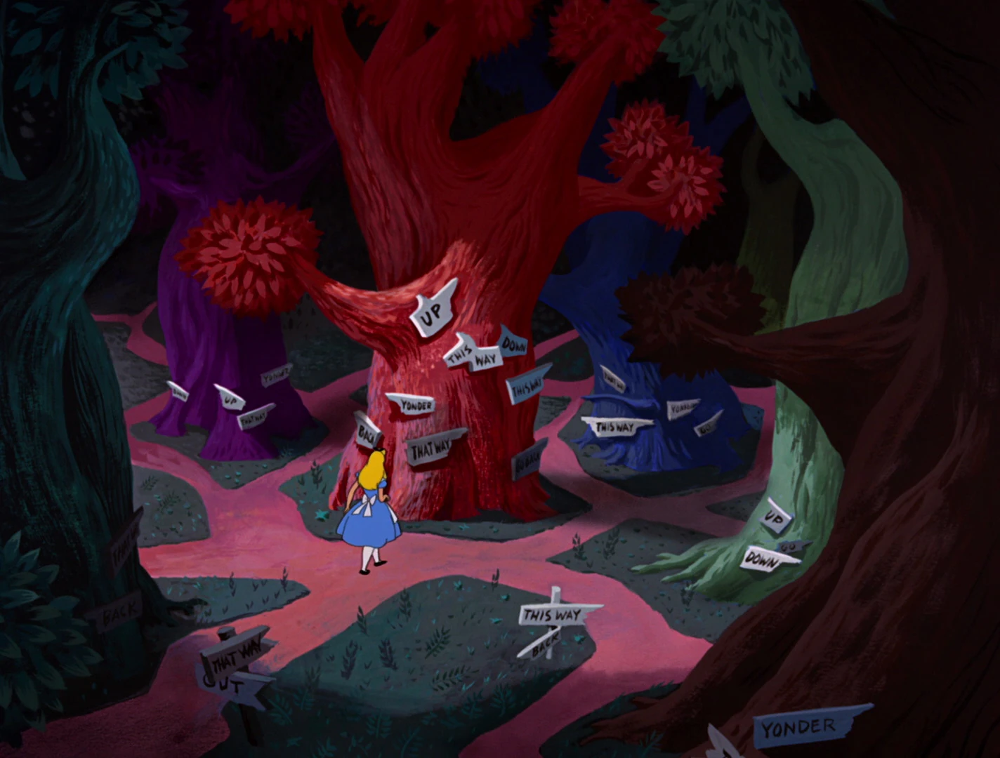

You follow the White Rabbit's path deeper into the forest. The air feels thick with magic, and the trees whisper secrets in hushed tones. As you venture further, you stumble upon a peculiar scene.
Before you lies a forked path, with two signs pointing in different directions: